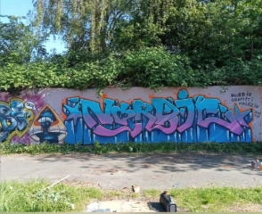
Nordic Graffiti Magazin
Graffiti, Street-Art und urbane Kunst
DAS BUNTBEWEGT NETZWERK
Gute Ideen entstehen oft gemeinsam.
BuntBewegt lebt von Begegnungen, kreativen Köpfen und Menschen, die etwas bewegen möchten.
Seit unserer Gründung 2026 durften wir bereits mit unterschiedlichen Einrichtungen, Vereinen, Unternehmen und Künstlern zusammenarbeiten. Aus diesen Begegnungen sind gemeinsame Projekte, Veranstaltungen und neue Ideen entstanden.
Wir freuen uns über das Vertrauen unserer bisherigen Partner und darauf, unser Netzwerk stetig weiterzuentwickeln.
Vielfalt, die verbindet
Gemeinsame Projekte, Begegnungen und neue Ideen – das verbindet uns.
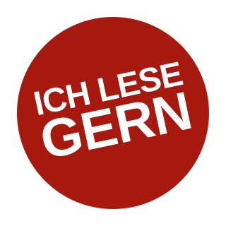
Literatur, Kultur, Vereinsarbeit und Ehrenamt
Zur Website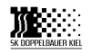
Playground, Events, Vereinsarbeit und Ehrenamt
Zur Website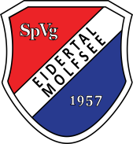
Events, Sport, Vereinsarbeit und Ehrenamt
Zur Website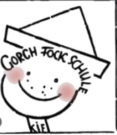
Musical- und Yoga-AGs
Zur Website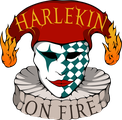
Playground, kreative Veranstaltungsangebote, Events und Shows
Zur Website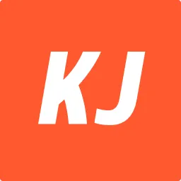
Playground, Kinder- und Jugendarbeit und Ehrenamt
Zur Website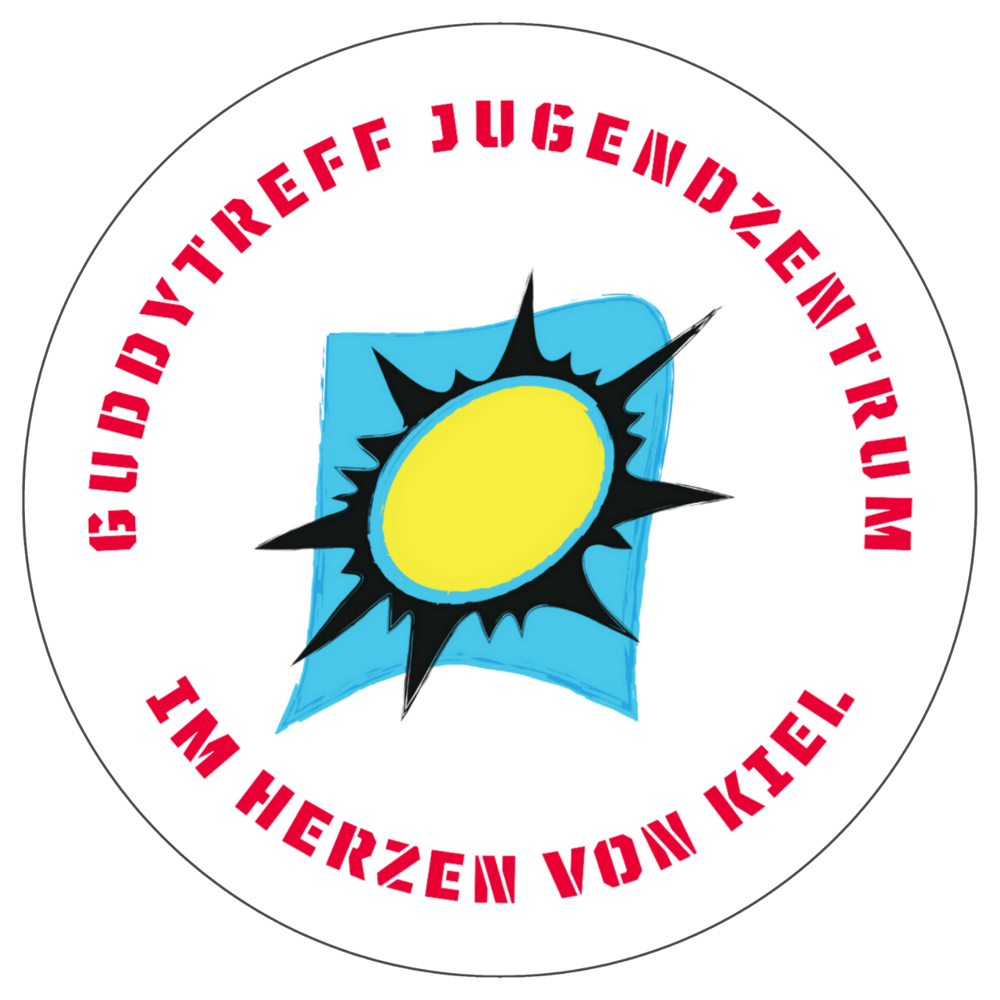
Kinder- und Jugendarbeit
Zur Website
Playground, Gaming, Jugendkultur, Vereinsarbeit und Ehrenamt
Zur Website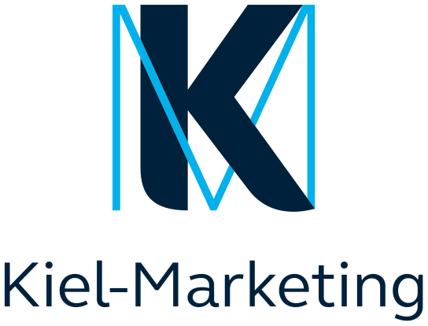
Kulturveranstaltungen und Events
Zur Website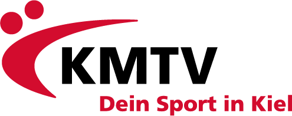
Events, Sport und Vereinsarbeit
Zur Website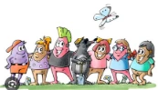
Kinderliteratur, Kreativität, Events und Lesungen
Zur Website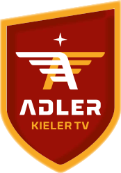
Volleyball, Events und Ehrenamt
Zur Website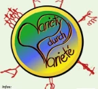
Playground, Events und kreative Projekte
Zur Website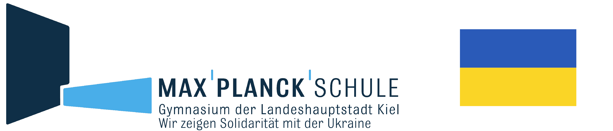
Teambuilding und Musicalprojekte
Zur Website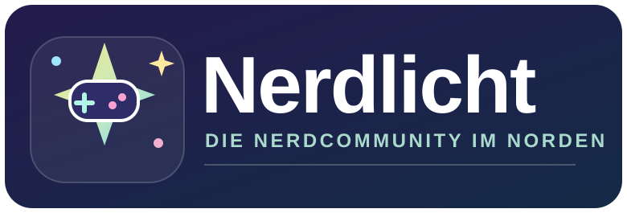
Playground, kreatives Netzwerk, Vereinsarbeit und Ehrenamt
Zur Website
Graffiti, Street-Art und urbane Kunst
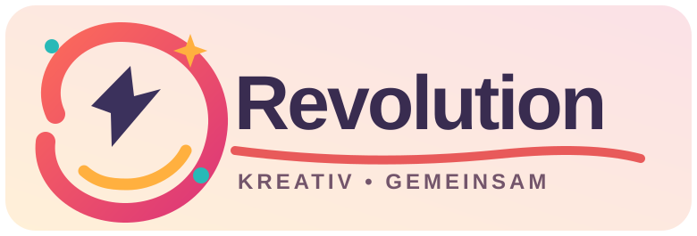
Playground, kreatives Netzwerk und Kunst
Raum für neue Kooperationen
Ob Schule, Verein, Unternehmen, Künstler oder Veranstalter – wir freuen uns über Menschen, die ihre Ideen und Fähigkeiten einbringen und gemeinsam mit uns neue Projekte gestalten möchten.
Von einzelnen Veranstaltungen bis hin zu langfristigen Kooperationen sind viele Formen der Zusammenarbeit möglich.
Jetzt Zusammenarbeit anfragen